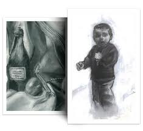
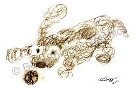
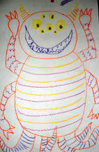

Originally not doing so well in Elementary School, I was determined to continue my streak through High School, and I found that I was at least Good at this.
Growing up in Washington D.C., the world always seemed so big and confusing. I frequently found myself sketching and drawing imaginary worlds that I would surely explore one day when I grew up. Kindergarten to this day still makes my stomach hurt, just thinking of all the shapes and colors and decorations on the walls
At least I could lose myself in my crayons...
